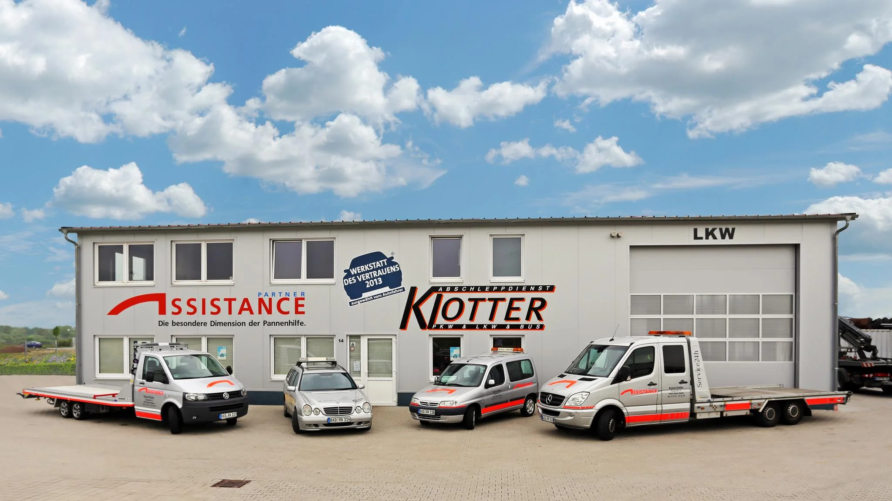

Panne? Unfall? Wir kommen.
Abschleppdienst Klotter in Baden-Baden und Rastatt. Pannenhilfe, Abschleppen und Bergung für PKW, LKW und Bus, 24 Stunden am Tag, 7 Tage die Woche.
Hier steht die Flotte.
Flugstraße 14 in Baden-Baden-Oos: Abschleppwagen mit Plateau, Servicefahrzeuge für die Pannenhilfe und eine eigene LKW-Halle. Dazu eine freie Kfz-Werkstatt, in der wir Ihr Auto direkt reparieren können.

Was wir für Sie tun.
Pannenhilfe
Wir kommen zu Ihnen und bringen Ihr Auto nach Möglichkeit vor Ort wieder in Gang.
Abschleppen
Vom Parkplatz bis zur Autobahn. Mit Plateau-Fahrzeug, sicher und schonend.
Unfall und Bergung
Nach Unfällen sichern wir die Stelle und bergen Ihr Fahrzeug. PKW, LKW und Bus.
Falsch getankt
Tank leeren und spülen, damit der Motor keinen Schaden nimmt.
Freie Kfz-Werkstatt
Reparatur in der eigenen Werkstatt, ohne Umweg über einen zweiten Betrieb.
Transporte und Oldtimer
Fahrzeugtransporte, auch für Liebhaberstücke, die man nicht jedem anvertraut.
So läuft ein Einsatz.
-
Anrufen.
Sagen Sie uns, wo Sie stehen und was passiert ist. Tag und Nacht nimmt jemand ab.
-
Wir sichern.
Ihre Sicherheit und die der Unfallstelle kommen zuerst. Dann kümmern wir uns ums Auto.
-
Weiter geht’s.
Wieder flott vor Ort oder ab in die Werkstatt. Wenn nötig organisieren wir ein Taxi für Sie.
Was Kunden schreiben.
4,7Sterne bei 364 Google-Bewertungen
„Sehr schneller Service. War in 15 Minuten schon da.“
Bewertung auf golocal, 2018
„Man hat gemerkt, dass die Handgriffe sitzen.“
Bewertung auf golocal, 2019
„Der Fahrer hatte für uns ein Taxi organisiert und war telefonisch erreichbar.“
Bewertung auf golocal, 2018
Besenwagen beim
Oldtimer-Meeting.
Beim Internationalen Oldtimer-Meeting in Baden-Baden fahren wir als Besenwagen mit und sichern die Ausfahrten ab. Mit dabei: unser eigener Borgward B2000, selbst ein echter Oldtimer.
Liegen geblieben?
07221 27617-0Rund um die Uhr, auch am Wochenende. Oder schreiben Sie uns per WhatsApp.